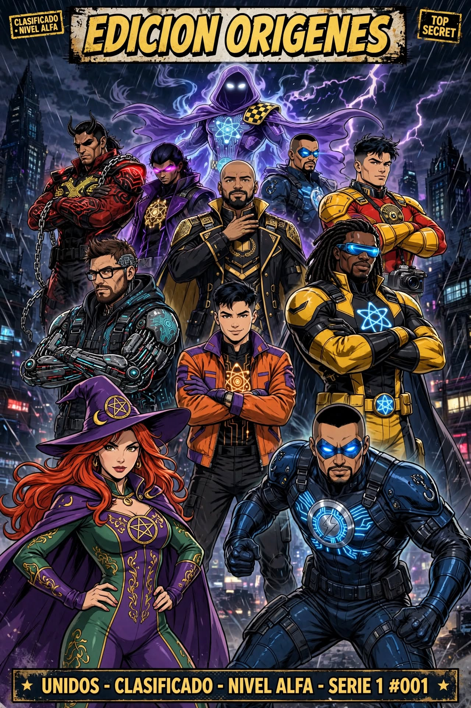

La señal
Creadores de distintos lugares de Latinoamérica construían sus comunidades por separado. Una partida y una colaboración demostraron que había algo más grande por descubrir si conectábamos esos mundos.
DIFERENTES MUNDOS. UNA MISMA LEGIÓN.
Ninguna gran historia comienza con todos sus protagonistas en el mismo lugar. A veces empieza con una partida, una conversación y la decisión de no caminar en solitario.
Todo comenzó con Demian y ROD3R1K, compartiendo partidas de Marvel Rivals y una idea que todavía no tenía nombre: reunir a creadores con personalidades, talentos y comunidades diferentes. Akuma se sumó a aquellas primeras misiones y el núcleo empezó a tomar forma.
Con el tiempo llegaron nuevos encuentros, otras partidas y nuevas voces. Capy, ElGabii, Ardipii, Lady Moriarty, Dave, Hábitos Atómicos y Pato — Oratoris ampliaron el universo desde sus propios mundos y especialidades. No todos crean el mismo contenido ni recorren el mismo camino: justamente ahí está nuestra fortaleza.
La antigua etapa S3X-MEN fue el punto de partida. Hoy esa historia evoluciona hacia la Legión Multiversal: una iniciativa latinoamericana que conecta gaming y entretenimiento, conocimiento y tecnología, y desarrollo personal. Oratoris conserva su identidad y su espacio de creación en YouTube; cada plataforma y cada trayectoria se presentan por separado en sus respectivos expedientes.

La Legión no nació para uniformar a sus integrantes. Nació para reunir lo que hace único a cada uno y convertir esa diversidad en una fuerza colectiva.
Creadores de distintos lugares de Latinoamérica construían sus comunidades por separado. Una partida y una colaboración demostraron que había algo más grande por descubrir si conectábamos esos mundos.
La Dirección tomó la decisión de convocar talentos con identidad propia. No buscamos copias ni canales idénticos: buscamos personas con algo auténtico para aportar.
Cada integrante llega con su historia, su comunidad y su especialidad. Gaming, entretenimiento, tecnología, comunicación y crecimiento personal conviven dentro de una misma organización.
Conectar comunidades latinoamericanas, impulsar colaboraciones, compartir oportunidades y demostrar que las fronteras no tienen por qué limitar el alcance de una buena idea.
El emblema nos identifica; la forma en que trabajamos juntos es lo que realmente nos representa.
No reclutamos números. Reclutamos personas con una identidad, una comunidad y algo que aportar. Ningún talento debería quedarse aislado por una frontera.
El talento no tiene una sola forma. Conectamos entretenimiento, conocimiento y crecimiento personal para construir una comunidad donde cada persona pueda aportar desde su especialidad.
Videojuegos, streaming, eventos, experiencias cooperativas y creación de contenido para compartir momentos memorables.
Programación, herramientas digitales, innovación, aprendizaje y experiencias que ayudan a ampliar nuestras capacidades.
Filosofía, motivación, hábitos, reflexión y conversaciones que también nos hacen crecer fuera de la pantalla.
Una identidad abierta: cada integrante puede conectar con más de una dimensión. No son compartimentos cerrados, sino distintas formas de sumar al equipo.
En el Capítulo 02 vas a encontrar el roster oficial. Cada integrante aparece una sola vez, con su nueva carta y acceso a un expediente que reúne identidad, biografía, habilidades, estadísticas verificables, trayectoria y misiones.
La Legión crece cuando cada uno puede avanzar sin dejar de ser quien es.
DIFERENTES MUNDOS. UNA MISMA LEGIÓN.Seleccioná el retrato de un integrante para conocer su carta oficial y abrir su bitácora individual.
Panel conectado a Twitch Helix mediante data.json: 9 canales, historial propio de hasta 30 días y una muestra programada cada 15 minutos. La información se presenta tal como la devuelve la API; los campos sin autorización o sin observaciones se muestran como no disponibles.
| Canal | Estado | Espectadores actuales | Categoría actual | Promedio observado | Pico observado | Horas en directo observadas | Muestras |
|---|---|---|---|---|---|---|---|
| Cargando estadísticas… | |||||||
Metodología: el sistema registra el estado del canal y los espectadores visibles en cada consulta. El promedio y el pico son estadísticas de las muestras propias, no métricas oficiales de Creator Dashboard. Las horas observadas y las horas vistas estimadas solo se calculan entre muestras consecutivas del mismo directo. Seguidores y analíticas históricas oficiales requieren permisos adicionales y no se completan con estimaciones.
Estado en directo, espectadores actuales, categoría y evolución de las muestras propias registradas.
Seguidores, promedio oficial y pico oficial quedan pendientes cuando Twitch no los entrega con los permisos disponibles.
Mantener un historial móvil de hasta 30 días y sumar reportes oficiales de Creator Dashboard cuando cada canal los facilite.
Según el instructivo del equipo, reúne campañas de claves, Creator Programs y Paid Quests. Es la herramienta recomendada en el Excel para campañas cooperativas y oportunidades de largo plazo.
Permite vincular canales, explorar campañas y solicitar juegos. El Excel la recomienda especialmente para ampliar la búsqueda de lanzamientos y títulos premium.
Hola, equipo de [ESTUDIO]. Somos el Instituto S3X-MEN, una comunidad latinoamericana de creadores de contenido que trabaja en colaboraciones entre Argentina, Bolivia y México. Producimos directos en español, sesiones cooperativas y contenidos individuales. Nos interesa conocer [JUEGO] y evaluar una cobertura acorde a nuestra comunidad. Canal: [ENLACE]. Métricas verificables: [SEGUIDORES], [PROMEDIO], [PICO] y período [30 DÍAS]. Muchas gracias por considerar nuestra propuesta.
Hello [STUDIO] team. We are Instituto S3X-MEN, a Latin American creator collective from Argentina, Bolivia and Mexico. We produce Spanish-language livestreams, co-op sessions and individual gaming content. We would love to explore a possible coverage opportunity for [GAME]. Channel: [LINK]. Verified metrics: [FOLLOWERS], [AVERAGE VIEWERS], [PEAK VIEWERS], period: [30 DAYS]. Thank you for your consideration.
Una selección pensada para organizar noches de juego, colaboraciones y streams entre integrantes. Las fichas distinguen cooperativo real, experiencias para dos y títulos multijugador que no son cooperativos. Las plataformas y el crossplay dependen de la edición y pueden cambiar: antes de organizar una sesión, revisá la ficha oficial enlazada.
Criterio del Instituto: no confundimos multijugador con cooperativo, ni compatibilidad entre plataformas con crossplay. Cuando una función no está confirmada, figura como “a verificar”. No publicamos precios porque cambian según región, tienda y promociones.
Construyan una base, exploren cuevas, sobrevivan y creen un mundo persistente para la comunidad.
Jugadores: depende del servidor o Realm.
Plataformas: PC, consolas y móviles; Java y Bedrock son ecosistemas separados.
Crossplay: sí en Bedrock entre plataformas compatibles; Java juega con Java.
Ideal para: mundo comunitario y eventos.
Exploración, construcción, jefes y supervivencia en un mundo procedural. La progresión compartida da para una campaña larga del Instituto.
Jugadores: hasta 10 por servidor.
Plataformas: PC, Xbox, PlayStation 5 y Switch 2 según versión/disponibilidad.
Crossplay: sí, entre plataformas compatibles.
Ideal para: campaña grupal de largo recorrido.
Una cuadrilla entra a instalaciones abandonadas para recuperar chatarra mientras evita criaturas. La comunicación y los sustos generan grandes momentos de stream.
Jugadores: cooperativo online; límite base y mods deben confirmarse antes de la sesión.
Plataformas: PC (Steam).
Crossplay: no confirmado; tratar como PC/Steam.
Ideal para: clips, caos y sustos.
Robots recolectores deben transportar objetos valiosos por escenarios peligrosos. La física convierte cada misión en una comedia de errores.
Jugadores: grupo online; confirmar límite vigente en la ficha del juego.
Plataformas: PC (Steam).
Crossplay: no confirmado; tratar como PC/Steam.
Ideal para: sesiones grupales y humor espontáneo.
Administren un supermercado entre amigos: reponer, cobrar, ordenar y ampliar el negocio mientras el local se llena de clientes.
Jugadores: cooperativo online; consultar límite actual en Steam.
Plataformas: PC (Steam).
Crossplay: no confirmado; tratar como PC/Steam.
Ideal para: stream relajado y roles dentro del equipo.
Planifiquen y ejecuten robos con herramientas, sigilo o improvisación. El equipo puede coordinar una operación prolija… o convertirla en un desastre memorable.
Jugadores: cooperativo online; verificar máximo actual.
Plataformas: PC (Steam).
Crossplay: no confirmado.
Ideal para: misiones con roles y humor.
Diseñen un restaurante, repartan tareas y sobrevivan al servicio. Cada jornada obliga a mejorar la cocina y coordinarse bajo presión.
Jugadores: hasta 4 local u online.
Plataformas: PC, PlayStation, Xbox y Switch.
Crossplay: limitado; no asumir juego cruzado entre familias de plataformas.
Ideal para: desafíos por equipos.
Compitan en un tablero lleno de trampas y minijuegos. Es una opción más competitiva que cooperativa: gana quien sobreviva a las amistades.
Jugadores: hasta 8 según modo.
Plataformas: PC y consolas según edición.
Crossplay: a verificar; no darlo por disponible.
Ideal para: noches de comunidad y torneos internos.
Entren a un mundo subterráneo para filmar monstruos y conseguir visualizaciones. El objetivo es volver con material… si todos logran salir.
Jugadores: hasta 4 online.
Plataformas: PC; consultar disponibilidad actual en tiendas.
Crossplay: la ficha consultada muestra compatibilidad multiplataforma en versiones actuales; confirmar edición y redes antes de coordinar.
Ideal para: clips y episodios temáticos.
Investigen casas embrujadas, reúnan pruebas y determinen qué entidad los acecha. La tensión crece con cada herramienta que dejan atrás.
Jugadores: hasta 4.
Plataformas: PC, PlayStation y Xbox.
Crossplay: sí, entre plataformas compatibles.
Ideal para: noches de terror en equipo.
Coordinen una cocina imposible, preparen pedidos y eviten que el restaurante colapse. Fácil de entender, difícil de dominar en equipo.
Jugadores: hasta 4 local u online.
Plataformas: PC, PlayStation, Xbox y Switch.
Crossplay: parcial y dependiente de plataforma/edición; verificar antes de reunir el grupo.
Ideal para: desafíos cronometrados.
Una aventura diseñada exclusivamente para dos jugadores, con mecánicas distintas en cada capítulo y cooperación constante.
Jugadores: 2.
Plataformas: PC, PlayStation, Xbox y Switch.
Crossplay: disponible entre plataformas compatibles según EA; revisar la lista oficial.
Ideal para: dúos del roster. No es para grupos de cuatro.
Formen una tripulación, naveguen, busquen tesoros y enfrenten otras tripulaciones. Cada viaje puede convertirse en una historia propia.
Jugadores: tripulación de hasta 4.
Plataformas: PC, Xbox y PlayStation 5.
Crossplay: sí, con opciones de matchmaking multiplataforma.
Ideal para: eventos especiales y expediciones.
Un equipo policial táctico resuelve operaciones de alto riesgo. La coordinación, comunicación y planificación importan más que correr y disparar.
Jugadores: cooperativo online; confirmar máximo según modo/versión.
Plataformas: PC y consolas según edición.
Crossplay: verificar compatibilidad por plataforma y versión.
Ideal para: operaciones coordinadas.
Exploren una ciudad devastada, completen misiones y sobrevivan al parkour y a los infectados. La campaña cooperativa permite progresar en grupo.
Jugadores: hasta 4 en cooperativo.
Plataformas: PC, PlayStation y Xbox.
Crossplay: no entre PC, PlayStation y Xbox; sí entre Steam y Epic en PC, y entre generaciones de la misma familia.
Ideal para: campaña compartida.
Despierten como vampiros, construyan un castillo, cacen recursos y enfrenten jefes en un mundo compartido.
Jugadores: servidor multijugador; el límite depende de la configuración.
Plataformas: PC y PlayStation 5.
Crossplay: no asumir compatibilidad entre PC y PS5; revisar la configuración oficial del servidor.
Ideal para: progresión y construcción en equipo.
Cuatro enanos espaciales exploran cuevas generadas proceduralmente, extraen minerales y resisten oleadas alienígenas con clases complementarias.
Jugadores: hasta 4.
Plataformas: PC y Xbox; PlayStation según edición.
Crossplay: limitado a determinados ecosistemas/tiendas; confirmar antes de armar lobby.
Ideal para: misiones cooperativas repetibles.
Un grupo reducido a tamaño diminuto debe construir refugios, fabricar equipo y sobrevivir a insectos en un jardín enorme.
Jugadores: hasta 4.
Plataformas: PC, Xbox, PlayStation y Switch según edición.
Crossplay: compatible entre plataformas admitidas mediante cuenta Microsoft.
Ideal para: campaña de supervivencia grupal.
Desplieguen escuadras para cumplir objetivos y defender la Supertierra. El fuego amigo obliga a coordinar cada movimiento.
Jugadores: hasta 4.
Plataformas: PC, PlayStation 5 y Xbox Series según disponibilidad.
Crossplay: sí entre plataformas compatibles.
Ideal para: eventos de escuadrón y operaciones temáticas.
La propuesta de gestionar una tienda temática puede funcionar para un stream distendido, pero la modalidad multijugador no queda acreditada con la información reunida.
Jugadores: no confirmado.
Plataformas: PC/Steam, sujeto a ficha del producto.
Crossplay: no confirmado.
Estado: candidato en observación; no anunciar como cooperativo hasta verificarlo.
VALORANT: shooter táctico competitivo 5 contra 5; puede servir para torneos del Instituto, pero no corresponde al arsenal PvE/cooperativo.
Supermarket Simulator: la ficha original dependía de mods para habilitar cooperación. No se presenta como modo cooperativo oficial.
A Way Out: aventura cooperativa exclusivamente para 2 jugadores; se puede incorporar como recomendación para dúos, no como opción de grupo.
One-Armed Cook: se mantiene fuera de la selección hasta comprobar por separado su ficha, límite de jugadores y compatibilidad; no confundirlo con One-Armed Robber.
Confirmar versión del juego, número de participantes, tienda/edición, crossplay exacto y requisitos de cuenta o suscripción. Los enlaces llevan a páginas oficiales o a la búsqueda de Steam del título; los datos marcados “a verificar” no deben anunciarse como confirmados.
El Instituto reúne creadores con experiencia en programas de partners, campañas de claves y colaboraciones con desarrolladores. Diferenciamos claramente una asociación oficial, un programa de creadores y una campaña puntual.
Partner de Twitch — Bolivia.
Partner Creator declarado de Enshrouded y Cinderia.
Participación en campañas y solicitudes mediante Lurkit y Keymailer.
La sincronización automática muestra presencia en directo y muestras observadas durante una ventana móvil de hasta 30 días. Estos datos sirven para seguimiento interno, pero no sustituyen el promedio de espectadores de 30 días ni las métricas oficiales exigidas por los programas de partners. Pato utiliza YouTube y se gestiona por separado.
| Canal | Estado | Espectadores actuales | Categoría | Promedio observado | Pico observado | Muestras |
|---|---|---|---|---|---|---|
| Cargando métricas… | ||||||
Para solicitudes comerciales, completar por separado las métricas oficiales del período solicitado desde Twitch Creator Dashboard → Analytics → Overview. No usar las muestras parciales como sustituto.
Los umbrales y beneficios siguientes provienen del Excel del equipo. Son referencias de trabajo, no confirmación de que las convocatorias sigan abiertas ni de que un integrante esté aprobado.
Referencia de requisitos: El Excel sugería 0–5+ promedio y 100 seguidores. El portal oficial no publica un mínimo numérico general; revisa cada misión. La selección del Creator Portal puede ser manual.
Keys, noticias, embargos, sorteos y assets.
Verificar convocatoria actual antes de aplicar
Referencia de requisitos: El programa Fellowship of the Furies pide como referencia 20 espectadores concurrentes promedio en Twitch durante el último mes o 800 vistas promedio en los últimos 5 videos de YouTube. La selección es manual y cumplir el umbral no garantiza ingreso.
Indies, misiones, recompensas y posibles Paid Quests.
Verificar convocatoria actual antes de aplicar
Referencia de requisitos: Excel: 5+ promedio; 200 seguidores mínimos
Claves, acceso anticipado y comunidad con desarrolladores.
Verificar convocatoria actual antes de aplicar
Referencia de requisitos: Excel: 5–10+ promedio; 200 seguidores mínimos
Claves de juego/DLC y acceso anticipado.
Verificar convocatoria actual antes de aplicar
Referencia de requisitos: El Excel anotaba 10+ promedio y 300 seguidores. Creator Crew oficial es abierto a creadores de cualquier tamaño; no confundirlo con el Partner Programme, que tiene criterios separados.
Claves, showcases y materiales promocionales.
Verificar convocatoria actual antes de aplicar
Referencia de requisitos: Excel: 10–15+ promedio; 300 seguidores mínimos
Claves, DLC y campañas.
Verificar convocatoria actual antes de aplicar
Referencia de requisitos: El Excel anotaba 10+ promedio y 300 seguidores; Creator Crew oficial está abierto a creadores de cualquier tamaño y no equivale al Partner Programme.
Creator Crew ofrece recursos, desafíos y recompensas comunitarias. No confundirlo con el Partner Programme.
Verificar convocatoria actual antes de aplicar
Referencia de requisitos: Excel: 10+ promedio; 250 seguidores mínimos
Pruebas, contacto con desarrolladores y perks.
Verificar convocatoria actual antes de aplicar
Referencia de requisitos: El Excel sugería 15–20+ promedio y 500 seguidores. La guía oficial actual de Funcom usa como referencia 20 CCV en Twitch (últimos 30 días) o 1.500 vistas promedio en YouTube.
Conan Exiles, Dune: Awakening y Metal: Hellsinger. Requisitos actuales: 20 CCV Twitch o 1.500 vistas medias YouTube como referencia.
Verificar convocatoria actual antes de aplicar
Referencia de requisitos: Excel: 15+ promedio; 400 seguidores mínimos
Programa de creadores y claves.
Verificar convocatoria actual antes de aplicar
Referencia de requisitos: El Excel anotaba 20–50+ promedio y 500+ seguidores; la página oficial actual exige 100 CCV como mínimo (ideal 150) dos veces por semana o videos de Phasmophobia con 2.500 vistas promedio (ideal 5.000). El programa está cerrado a nuevas solicitudes.
El Excel registró estos beneficios históricos. Estado oficial consultado: solicitudes de Partner cerradas; los requisitos vigentes y la apertura deben revisarse en el enlace oficial.
Verificar convocatoria actual antes de aplicar
Referencia de requisitos: Excel: 30–50+ promedio para paid; 1.000 seguidores
Claves, campañas y posibles acciones pagas.
Verificar convocatoria actual antes de aplicar
Referencia de requisitos: Excel: 20+ promedio; 500 seguidores mínimos
Detroit: Become Human / Heavy Rain; programa de creadores.
Verificar convocatoria actual antes de aplicar
Referencia de requisitos: Excel: 25+ promedio; 500 seguidores mínimos
Campañas de claves y posibles acciones pagas.
Verificar convocatoria actual antes de aplicar
Referencia de requisitos: Excel: 15+ promedio; 300 seguidores mínimos
Accesos, códigos y eventos.
Verificar convocatoria actual antes de aplicar
Publisher con catálogo amplio de acción, RPG, aventura y plataformas. Entre sus franquicias figuran Darksiders, Gothic, Titan Quest y Destroy All Humans! El portal contempla claves, noticias, embargos, sorteos, assets y promoción. No publica un umbral universal de espectadores; las solicitudes se revisan manualmente. Los títulos disponibles dependen de cada campaña.
Publisher especializado en juegos independientes. Su catálogo incluye títulos como Cassette Beasts, Kingdom Two Crowns, Sable y Dome Keeper. Fellowship of the Furies se gestiona mediante Lurkit y ofrece acceso a juegos, novedades, misiones, recompensas, quests privadas y embargos anticipados. Requisitos de referencia: 20 CCV Twitch o 800 vistas promedio en los últimos 5 videos de YouTube; la selección es manual.
Estudio detrás de Dune: Awakening, Conan Exiles y Metal: Hellsinger. La guía oficial usa 20 CCV en Twitch durante los últimos 30 días o 1.500 vistas promedio en YouTube como referencia, además de actividad y buen estado del canal.
Phasmophobia es un juego de terror cooperativo para cuatro jugadores. La página oficial informa que las solicitudes del Partner Program están cerradas actualmente. Requisitos publicados: mínimo 100 CCV (ideal 150) dos veces por semana o videos con 2.500 vistas promedio (ideal 5.000).
Programa comunitario oficial abierto a creadores de cualquier tamaño, con recursos, desafíos y recompensas. No equivale al Partner Programme, que es una categoría separada.
La matriz del Excel conserva sus objetivos históricos para planificar solicitudes; esta verificación externa prevalece cuando hay diferencias. La disponibilidad de campañas y los requisitos pueden cambiar.
¿Sos desarrollador, publisher, agencia, marca o equipo de marketing? Podés acercarnos propuestas de campañas, claves, accesos anticipados, patrocinios, sorteos o colaboraciones.
Información útil: nombre de empresa, persona de contacto, juego o producto, objetivo de campaña, fechas, plataformas, entregables, presupuesto (si corresponde) y enlace a materiales oficiales.
Contacto inicial: losmoriartys@gmail.com
Colaboración principal propuesta en el Excel: 19:00 Bolivia y 18:00 México CDMX. La participación se coordina según disponibilidad.
Mini colaboración sugerida para grupos reducidos.
Encuentro propuesto para conectar con integrantes de México.
Agenda propuesta, no calendario confirmado. Los horarios individuales de cada integrante se completarán con disponibilidad aprobada.
| Integrante | Disponibilidad documentada |
|---|---|
| Los Moriartys | Lun/Mié/Vie 20:00 ARG · Sáb 21:00 ARG |
| TheR0D3R1K | 20:00 Bolivia · Sábados en horario grupal |
| Capyunaplay | Lun/Mié/Jue 18:00 ARG · Sáb 21:00 ARG |
| ArdiPii | 18:00 México CDMX · Sábados en horario grupal |
| Akumazoldyck | 18:00 México CDMX · Sábados en horario grupal |
| elgabii090 | 19:00 ARG |
| habitos_atomicos | 20:00 ARG |
| Dave | Horario pendiente de confirmar |
| Pato | Horario pendiente de confirmar |
Horarios recuperados de la planilla del equipo. Confirmar con cada integrante antes de publicar como calendario definitivo; el Excel contiene datos de una etapa anterior.
Proponé juegos, eventos, actividades, colaboraciones o mejoras para el Instituto.